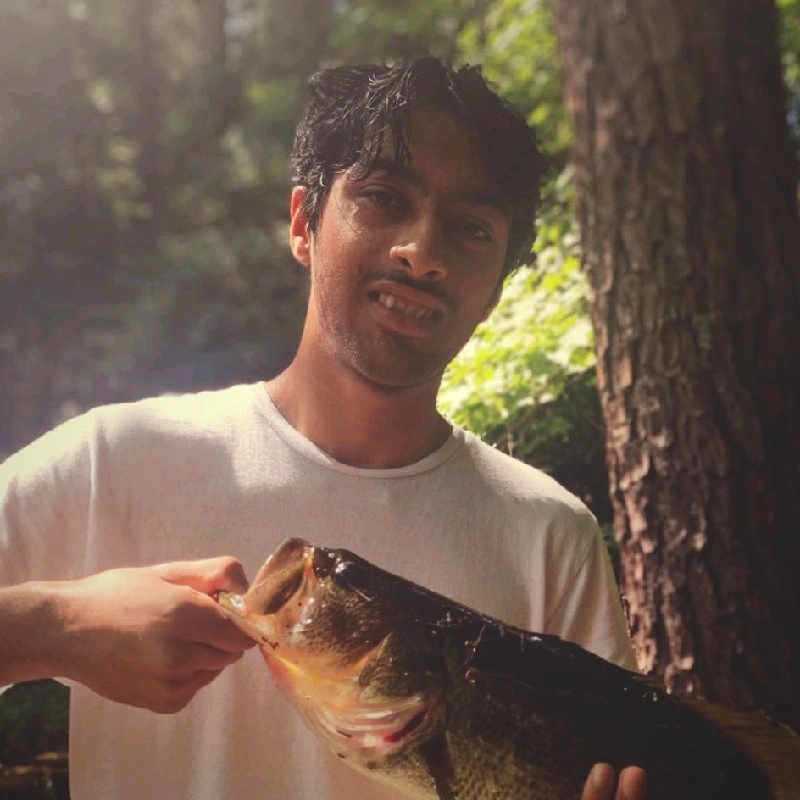

I'm Aaban — a programmer, robotics enthusiast, and digital tinkerer.
Explore My Work
I’m Aaban Akhtar — a systems developer, roboticist, and passionate builder. Whether it’s designing an x86 kernel, crafting a 6502 emulator, or building a subsystem for an FTC robot, I love creating purposeful tech from the ground up.
Since the beginning, I’ve been drawn to low-level technology, exploring it through hands-on projects. My interests primarily lean toward embedded systems, operating system development, and hardware-focused programming.
I'm currently exploring internships, and love to explore how humans solve problems through code. Outside of tech, I love to fish and occasionally play basketball. I also run the ARC Gaming PCs storefront on Jawa.gg.
I love to code. Here are some of my best projects!
An educational operating system written in C and x86, with a simple shell and ramdisk.
A complete emulator for the MOS 6502 processor with instruction-level accuracy.
A simple programming language than runs on a custom bytecode virtual machine
I'm always open to collaborating, discussing ideas, or just talking tech. Feel free to reach out!